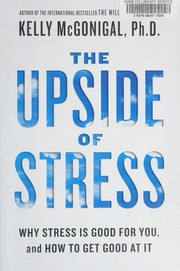
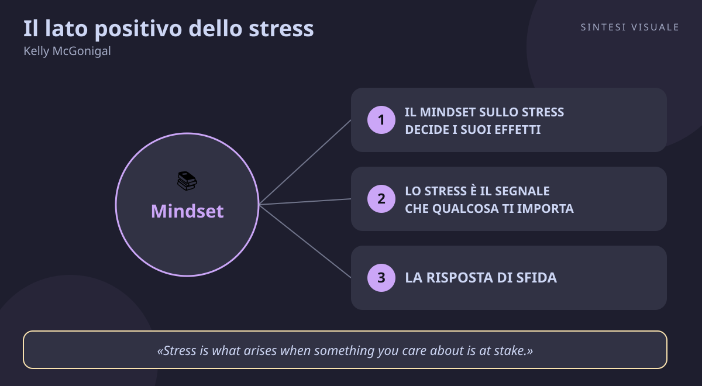

Home / Libri / Il lato positivo dello stress

Il lato positivo dello stress
Kelly McGonigal · Gestione dello stress
«Il lato positivo dello stress»
- Mindset potenziante
- Stress e significato
- Risposta di sfida
- Tendi-e-fai-amicizia
🧭Introduzione
Kelly McGonigal è psicologa della salute e docente alla Stanford University, nota anche per il bestseller The Willpower Instinct e per un TED talk sullo stress visto da oltre 15 milioni di persone. Per anni ha insegnato ai suoi studenti esattamente ciò che ci ripetono tutti: lo stress fa male, va ridotto, va evitato. Poi, studiando i dati, ha dovuto ricredersi in pubblico: le ricerche dicevano che non è lo stress in sé ad ammalarci, ma soprattutto il crederlo velenoso. Da quella svolta nasce questo libro.
Perché questo libro conta oggi: viviamo nell'epoca dell'ansia da prestazione, delle notifiche infinite, del lavoro che non stacca mai. Il consiglio standard — "rilassati, elimina lo stress" — è irrealistico e, secondo McGonigal, addirittura dannoso: ci fa sentire falliti proprio quando la vita ci chiede di più. Questo libro propone la mossa opposta: non meno stress, ma un rapporto migliore con lo stress.
A chi è utile: a chi ha responsabilità pesanti (genitori, manager, freelance, studenti sotto esame), a chi sente il cuore a mille prima di parlare in pubblico, a chi esce da un periodo duro e vuole capire cosa farsene.
📘Riassunto
La scintilla centrale: e se tutto ciò che credi sullo stress fosse sbagliato? Il libro risolve questo problema: come trasformare la risposta allo stress — cuore che batte, respiro corto, tensione — da nemico temuto ad alleato che ti dà energia, coraggio e connessione con gli altri.
La struttura logica segue tre mosse, con scienza, storie ed esercizi in ogni capitolo:
- Riconsidera lo stress: il famoso studio su 30.000 americani (Keller e colleghi, 2012) in cui chi aveva molto stress ma NON lo credeva dannoso ebbe il rischio di mortalità più basso — il tuo atteggiamento verso lo stress cambia ciò che lo stress fa al tuo corpo. Da qui nasce il concetto di stress mindset.
- Usa lo stress: la risposta allo stress non è una sola (l'attacco-o-fuga), ma almeno tre — minaccia, sfida e "tendi-e-fai-amicizia" — e ciascuna ti prepara a un'azione utile: scappare, dare il meglio, chiedere e offrire aiuto.
- Cresci con lo stress: il cervello è costruito per imparare dalle esperienze dure (crescita post-traumatica, "stress inoculation"); le avversità affrontate con il giusto mindset lasciano resilienza, non solo cicatrici.
Il punto di svolta: il capitolo sul mindset, con i due elenchi speculari — Stress Is Harmful contro Stress Is Enhancing — che il lettore è invitato a compilare su di sé. È lì che il libro smette di essere divulgazione e diventa uno specchio: scopri di soffrire di "cecità da mindset", cioè di non sapere nemmeno cosa credi davvero sullo stress.
L'eredità oggi: il libro ha portato la psicologia dei mindset (Dweck) dentro la gestione dello stress e ha ispirato interventi di "stress mindset training" usati in aziende, università ed eserciti. Resta il contraltare scientifico di Carnegie e Sapolsky: non gestire lo stress evitandolo, ma diventando bravi ad attraversarlo.
💡Concetti chiave
- Il mindset sullo stress decide i suoi effetti: credere che lo stress faccia male peggiora davvero salute e prestazioni; crederlo utile le migliora.
- Lo stress è il segnale che qualcosa ti importa: non ti stressi per ciò che non conta; stress e significato sono inseparabili.
- La risposta di sfida: cuore che batte e respiro veloce non sono un guasto — sono carburante che il corpo ti mette a disposizione.
- Tendi-e-fai-amicizia: sotto stress il cervello rilascia ossitocina e ti spinge a cercare e offrire aiuto; lo stress è sociale.
- Il cervello impara dallo stress: ogni difficoltà superata e rielaborata aumenta la resilienza futura.
- Tre credenze protettive: vedi la risposta del corpo come utile, vediti capace di farcela, ricorda che lo stress è universale — e sarai protetto dai suoi danni.
📖1. Il mindset sullo stress decide i suoi effetti
- Definizione lo stress mindset è l'insieme delle tue convinzioni sugli effetti dello stress: mindset "lo stress fa male" (mi consuma, mi blocca, va evitato) contro mindset "lo stress aiuta" (mi attiva, mi fa crescere, va usato). Gli studi mostrano che chi ha il secondo mindset ha meno problemi di salute, meno depressione e migliori prestazioni a parità di carico stressante.
- Esempio due colleghi con la stessa scadenza impossibile. Il primo pensa "questo stress mi sta distruggendo" e passa la sera a rimuginare con insonnia. Il secondo pensa "questa tensione mi sta caricando" e usa la sera per pianificare le mosse di domani. Stesso carico, esiti diversi.
- Come applicarlo fai il test del libro — completa le frasi "quando sono stressato, il mio corpo..." e "lo stress mi rende...". Poi per una settimana annota ogni sera una frase sul tuo stress e chiediti: sto descrivendo un veleno o un carburante? La semplice osservazione ("mindset mindfulness") è già l'intervento.
- Errore comune pensare che basti "pensare positivo". Il mindset potenziante non nega le difficoltà: riconosce che la situazione è dura E che la tua attivazione ti aiuta ad affrontarla.
- Collegamento Carol Dweck e il mindset di crescita; l'effetto placebo/nocebo in medicina — le credenze cambiano la biologia.
📖2. Lo stress è il segnale che qualcosa ti importa
- Definizione McGonigal ridefinisce lo stress come "ciò che nasce quando qualcosa a cui tieni è in gioco". Include pensieri, emozioni e reazioni fisiche — dal traffico alla perdita di una persona cara — e rivela una verità: non puoi avere una vita significativa senza un po' di stress.
- Esempio sei teso prima del colloquio per il lavoro dei sogni. Invece di concludere "c'è qualcosa di sbagliato in me", leggi il segnale: sono teso perché questo lavoro conta per me. La tensione è la misura del valore, non un difetto.
- Come applicarlo quando senti lo stress salire, chiediti "cosa c'è in gioco qui che mi importa?". Nominalo ad alta voce ("mi importa fare bella figura con questo cliente perché credo nel progetto"): trasforma la minaccia vaga in un valore chiaro.
- Errore comune trattare ogni stress come un problema da eliminare — "se sono stressato al lavoro, il lavoro è sbagliato; se sono stressato in coppia, la coppia è sbagliata". Così si butta via il bambino con l'acqua sporca: si elimina il significato insieme al fastidio.
- Collegamento Viktor Frankl e la volontà di senso: la sofferenza senza senso distrugge, la fatica con un senso costruisce.
📖3. La risposta di sfida
- Definizione la fisiologia distingue la risposta di minaccia (vasi stretti, cuore che pompa a vuoto, paura) da quella di sfida (cuore forte, respiro profondo, vasi aperti, energia disponibile). La differenza la fa in gran parte l'interpretazione: se leggi il batticuore come "sono pronto", il corpo passa in modalità sfida, con recupero più rapido e prestazioni migliori.
- Esempio prima di un esame o di una presentazione, il cuore martella. Invece di "oddio sto andando in panico", di' a te stesso: "il mio corpo mi sta dando energia per dare il meglio". Negli esperimenti di Harvard (Jamieson e colleghi), questa sola frase di reinterpretazione ha migliorato i punteggi ai test e ridotto la costrizione vascolare.
- Come applicarlo protocollo in tre passi — (a) nota i segnali ("sento il cuore forte"); (b) dai loro il benvenuto ("grazie corpo, mi serve energia"); (c) usa l'energia ("a cosa mi serve ora questa carica?"). Vale prima di riunioni, gare, esami, conversazioni difficili.
- Errore comune cercare di calmarsi a forza ("devo rilassarmi, devo rilassarmi") quando sei già attivato: la repressione aumenta l'attivazione. Meglio cavalcare l'onda che provare a fermarla.
- Collegamento la legge di Yerkes-Dodson (un po' di attivazione migliora le prestazioni); le tecniche di reappraisal della terapia cognitivo-comportamentale.
📖4. Tendi-e-fai-amicizia
- Definizione accanto ad attacco-o-fuga esiste una terza risposta allo stress, guidata dall'ossitocina: tend-and-befriend — proteggere chi ami e cercare connessione. Sotto stress diventiamo più empatici, più generosi, più desiderosi di contatto: lo stress ti rende più socievole, non più solo, e prendersi cura degli altri accelera il tuo stesso recupero fisiologico.
- Esempio dopo una giornata pesantissima, invece di chiuderti sul divano con il telefono, chiami un amico in difficoltà o aiuti tuo figlio con i compiti. Stranamente, dopo mezz'ora stai meglio tu: non è un caso, è ossitocina.
- Come applicarlo quando sei sotto pressione, aggiungi un gesto prosociale alla giornata — chiedi "come stai davvero?" a un collega, offri un aiuto concreto, racconta a qualcuno cosa stai passando. E dal lato opposto: fatti aiutare, non isolarti per "non disturbare".
- Errore comune credere che occuparsi degli altri sotto stress sia un lusso o una distrazione dal "vero" recupero (divano + serie TV). Gli studi citati mostrano invece che chi aiuta regolarmente gli altri è protetto dagli effetti dello stress sulla mortalità.
- Collegamento le ricerche di Shelley Taylor (UCLA) sulla risposta tend-and-befriend; il volontariato come fattore di longevità negli studi epidemiologici.
📖5. Il cervello impara dallo stress
- Definizione il cervello è costruito per imparare dalle esperienze stressanti: ormoni dello stress come cortisolo e DHEA favoriscono la crescita di nuove connessioni neurali. Se dopo la difficoltà rifletti su cosa è successo, il cervello "archivia la lezione" e la prossima sfida simile ti troverà più attrezzato. È la base della crescita post-traumatica e dello stress inoculation (piccole dosi di stress allenano come un vaccino).
- Esempio hai sbagliato una presentazione importante. Invece di seppellire il ricordo, una settimana dopo scrivi per 15 minuti: cosa è andato storto, cosa hai fatto bene comunque, cosa farai diverso. Quella scrittura trasforma una ferita in un manuale.
- Come applicarlo usa la "narrazione riparativa" del libro — racconta per iscritto un periodo duro come farebbe un giornalista: le sfide, il punto di svolta, cosa hai imparato, come sei cambiato. Bastano 15-20 minuti per 2-3 giorni. Oppure cerca dosi sane di stress scelto: sport impegnativo, parlare in pubblico, un corso difficile.
- Errore comune due opposti — rimuginare all'infinito senza mai chiudere il racconto (ferita sempre aperta), oppure evitare ogni sfida per "proteggersi" e scoprire di diventare ogni anno più fragili.
- Collegamento James Pennebaker e la scrittura espressiva; Nassim Taleb e l'antifragilità: alcuni sistemi migliorano sotto stress.
📖6. Tre credenze protettive
- Definizione McGonigal distilla le tre convinzioni che più proteggono dagli effetti nocivi dello stress: (1) la risposta del mio corpo è utile, è energia che posso usare; (2) io sono capace di affrontare e imparare da questo stress; (3) lo stress è una cosa che tutti vivono, non la prova che io o la mia vita siamo sbagliati.
- Esempio esame andato male. Versione senza scudo: "il mio corpo mi tradisce, non ce la farò mai, solo a me succedono queste cose" — strada verso ansia e rassegnazione. Versione con scudo: "ero attivato perché ci tenevo, posso imparare da questo errore, capita a tutti gli studenti" — strada verso il recupero.
- Come applicarlo trasforma le tre credenze in un mini-rituale da ripetere nei momenti duri: "1) il mio corpo mi aiuta; 2) posso farcela e imparerò; 3) non sono solo, è umano". Scrivile su un foglietto nel portafoglio finché non diventano automatiche.
- Errore comune applicarle come slogan magici una volta sola e concludere "non funziona". Sono credenze, cioè abitudini di pensiero: si costruiscono con la ripetizione, come un muscolo.
- Collegamento l'autoefficacia di Albert Bandura (credenza n. 2); la common humanity di Kristin Neff nella self-compassion (credenza n. 3).
💬Citazioni da ricordare
"Stress is what arises when something you care about is at stake." — È la definizione-cuore del libro: ogni volta che la ripeti, smetti di vedere lo stress come un guasto e inizi a vederlo come la prova che vivi per qualcosa.
"It turns out that how you think about stress is also one of those core beliefs that can affect your health, happiness, and success." — Conta perché sposta il potere dalle circostanze a te: non puoi sempre scegliere lo stress, ma puoi sempre allenare ciò che credi su di lui.
"Stress isn't bad. In The Upside of Stress, McGonigal highlights new research indicating that stress can, in fact, make us stronger, smarter, and happier — if we learn how to embrace it." — È la tesi in una frase: non un invito a cercarsi guai, ma a smettere di avere paura della propria umanità sotto pressione.
🌍Esempi di oggi
- Il colloquio che fa tremare le mani. Hai il cuore a mille in sala d'attesa. Invece di combatterlo, lo rileggi: è la risposta di sfida che ti pompa energia. Entri, parli con più grinta — e anche se non prendi il posto, esci con un muscolo in più per il prossimo colloquio.
- La settimana impossibile in ufficio. Scadenze, un collega malato, il capo nervoso. Invece di chiuderti, chiedi aiuto a un compagno e offri una mano a un altro: scatta il tendi-e-fai-amicizia e il team esce più unito di prima. Lo stress condiviso diventa colla, non veleno.
- Il genitore sotto esame. Notte in bianco per il figlio adolescente che non rientra. Il vecchio pensiero tossico: "se fossi un genitore migliore non sarei così agitato". Il nuovo: "sono agitato perché mio figlio mi importa da morire — e questa è una cosa buona". Cambia tutto, senza cambiare niente.
🛠️Azioni pratiche
- Reinterpreta un'attivazione al giorno. Quando senti cuore veloce, mani sudate o tensione prima di qualcosa, fermati 30 secondi e di': "il mio corpo mi sta dando energia, grazie". Annota sera per sera cosa è successo: costruisci il tuo diario del mindset.
- Trasforma uno stress in un valore. Prendi la tua preoccupazione più grande di oggi e scrivi in una frase a cosa tiene collegata ("sono stressato per X perché mi importa Y"). Leggila ogni mattina: è la tua bussola, non il tuo nemico.
- Fai un gesto prosociale sotto pressione. Nel giorno più pesante della settimana, aiuta qualcuno concretamente o racconta a una persona fidata cosa stai passando. Osserva come cambia il tuo recupero serale rispetto alle volte in cui ti sei isolato.
💎Da portare a casa
Non puoi scegliere una vita senza stress — ma puoi scegliere se lo stress ti consumi o ti costruisca: il tuo mindset è la leva più potente che hai.
Vuoi approfondire? Rispondi in chat con il numero di un concetto (1-6) e lo espando con altri esempi ed esercizi — oppure chiedimi di un tema: gestione dello stress, emozioni, mindset, resilienza, carriera.
🖼️In un colpo d’occhio

Tocca l’immagine per ingrandirla.